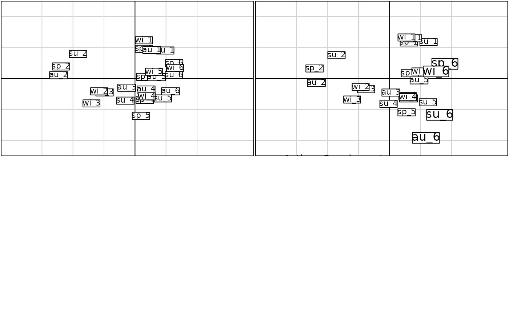

Projections of Supplementary Rows for a Partial Triadic Analysis of K-tables
suprow.pta.RdThis function performs a projection of supplementary rows (i.e. supplementary individuals) for a Partial Triadic Analysis (pta) of K-tables.
Computations are valid ONLY if the pta has been done on a K-Tables obtained by the withinpca function, followed by calls to the ktab.within and t functions.
Usage
# S3 method for class 'pta'
suprow(x, Xsup, facSup, ...)Details
This function computes the coordinates of the supplementary rows for a K-tables.
The table of supplementary rows is standardized according to the 'Bouroche' standardization used in the Within Analysis of the original pta.
In a first step, the table of supplementary rows is standardized (centred and normed) with the mean and variance of the original table of active individuals (i.e. the K-tables used in pta). Then, according to the withinpca procedure, a second transformation is applied.
For "partial", supplementary rows are standardized in each sub-table (corresponding to each level of the factor) by the mean and variance of each corresponding sub-sample in the table of active individuals. Hence, supplementary rows have null mean and unit variance in each sub-table.
For "total", supplementary rows are centred in each sub-table with the mean of each coresponding sub-sample in the table of active individuals and then normed with the global variance ot the table of active individuals. Hence, supplementary rows have a null mean in each sub-table and a global variance equal to one.
Value
Returns a list with the transformed table Xsup in tabsup and the coordinates of the supplementary rows in lisup.
Author
Benjamin Alric benjamin.alric@irstea.fr
Jean Thioulouse jean.thioulouse@univ-lyon1.fr
References
Bouroche, J. M. (1975) Analyse des données ternaires: la double analyse en composantes principales. Thèse de 3ème cycle, Université de Paris VI.
Examples
data(meau)
# Active rows
actenv <- meau$env[meau$design$site != "S6", -c(5)]
actfac <- meau$design$season[meau$design$site != "S6"]
# Suplementary rows
supenv <- meau$env[meau$design$site == "S6", -c(5)]
supfac <- meau$design$season[meau$design$site == "S6"]
# Total = active + suplementary rows
totenv <- meau$env[, -c(5)]
totfac <- meau$design$season
# PTA with 6 sampling sites
wittot <- withinpca(df = totenv, fac = totfac, scannf = FALSE, scaling = "partial")
kta1tot <- ktab.within(wittot, colnames = rep(c("S1", "S2", "S3", "S4", "S5", "S6"), 4))
kta2tot <- t(kta1tot)
pta1tot <- pta(kta2tot, scann = FALSE)
# PTA with 5 sampling sites and site 6 added as supplementary element
wit1 <- withinpca(df = actenv, fac = actfac, scannf = FALSE, scaling = "partial")
kta1 <- ktab.within(wit1, colnames = rep(c("S1", "S2", "S3", "S4", "S5"), 4))
kta2 <- t(kta1)
pta1 <- pta(kta2, scann = FALSE)
supenv.pta <- suprow(x = pta1, Xsup = supenv, facSup = supfac)
if (adegraphicsLoaded()) {
# g1t = active + suplementary rows
g1t <- s.label(pta1tot$Tli, labels = rownames(totenv),
plabels = list(box = list(draw = FALSE), optim = TRUE), xlim = c(-6, 5), ylim = c(-5, 5),
psub = list(text="Total", position="topleft"), plot = FALSE)
# g1 = Active rows
g1 <- s.label(pta1$Tli, labels = rownames(actenv),
plabels = list(box = list(draw = FALSE), optim =TRUE), xlim = c(-6, 5), ylim = c(-5, 5),
psub = list(text="Active", position="topleft"), pgrid = list(text=list(cex = 0)),
plot = FALSE)
# g2 = Supplementary rows
g2 <- s.label(supenv.pta$lisup, plabels = list(box = list(draw = FALSE), optim = TRUE),
ppoints = list(col = "red"), psub = list(text="Supplementary", position="topright"),
pgrid = list(text=list(cex = 0)), plot = FALSE)
# g3 = superposition of active and suplementary rows
g3 <- g1 + g2
# Comparison of the total analysis and the analysis with supplementary rows
ADEgS(list(g1t,g3))
} else {
par(mfrow=c(2,2))
# g1t = active + suplementary rows
g1t <- s.label(pta1tot$Tli, label = rownames(totenv), xlim = c(-6, 5), ylim = c(-5, 5),
sub="Total")
# g1 = Active rows
g1 <- s.label(pta1$Tli, label = rownames(actenv), clabel = 1, xlim = c(-6, 5),
ylim = c(-5, 5), sub="Active+Supplementary")
# g2 = Supplementary rows
g2 <- s.label(supenv.pta$lisup, clabel = 1.5, xlim = c(-6, 5), ylim = c(-5, 5),
add.plot = TRUE)
}
